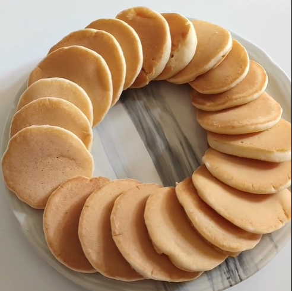

Geri Dön
Pankek
Malzemeler:
- 2 Yumurta
- 1,5 su bardağı süt
- Yarım çay bardağı sıvı yağ
- 1 kabartma tozu
- 1 çay bardağından az toz şeker
- Aldığı kadar un (normal kek hamurundan bir tık katı olmalı)
Tarif:
Yumurta ve şekeri çırpıyoruz. Süt ve yağ ekleyip tekrar çırpıyoruz.
Un ve kabartma tozunu ilave edip karıştırın 10 dk beklettikten sonra pişirebilirsiniz
AFİYET OLSUN...
